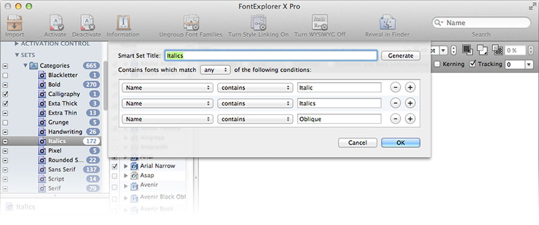

Font Organization
I recently took to time to obessively organize my font collection. If you love great fonts, and you love organizing stuff, this one's for you.
My knowledge and interest in fonts and typography are slowly growing. I’ve always appreciated great typography, but I’ve never been particularly creative with typography design because haven’t had a great organization system in place. Half of the battle around integrating beautiful typography into my designs is having proper a filing system that allows me to find just the font I need for the project at hand.
Recently, I decided to get serious about managing my disaster of a font library. I went from a scattered listing of assorted fonts in OS X’s native Font Book, to a smart, scalable, and organized library that makes font “discovery” easy and fun. I’m documenting my process here in hopes that you can benefit from what I learned.
The Setup
I decided to use Linotype’s FontExplorer X Pro for Mac as my organizing software (there’s also a PC version for you Windows folks). There are a number of font organizing software packages available (Fontcase, Font Pilot, Font Card, Master Juggler, Font Safari, and FontAgent Pro), but none of them seemed to have quite the power and polish I was looking for. Purchasing the software will set you back $79, but you can take advantage of a free 30-day trial if you want to take it for a test drive before you write the check.
Smart Sets For The Win

The beauty of FontExplorer is that it allows you to create “Smart Sets” of fonts based on parameters that you set up, and group those Smart Sets into folders. I like to think of it like Twitter hashtags - in effect, you can add multiple hashtags to each font, and then create “Smart Sets” that automagically grab fonts and font families containing those tags. These “hashtags” are actually little check boxes, and you access them by selecting a font and using the shortcut ⌘+I, or selecting “Font > Information” from the menu bar.
Here are the Smart Sets I created (you can do what works for you, of course – these were the sets I created that seemed to make sense to me and my workflow):
Categories (Rules used: “category contains”)
- Blackletter
- Bold
- Calligraphy
- Extra Thick
- Extra Thin
- Grunge
- Handwriting
- Italics
- Pixel
- Rounded Sans
- Sans Serif
- Serif
- Script
- Slab Serif
- Symbol
Defaults (Rules used: “is activated” / “is system font”)
- Active
- Inactive
- System
Foundry (Rules used: “copyright, manufacturer, and trademark contains”. For the website categories, I had to also use the “comment contains” rule, and add a comment on the appropriate fonts)
Noteworthy: I cheated here. Some of these sets actually describe the website I purchased them from, instead of the foundry. I like knowing all of the fonts I downloaded from , for example.
- Fonts.com
- Hoefler & Frere-Jones
- Lost Type
- Myfonts.com
Goodies
- Favorites - “Rating is 5 stars” and “number of activations greater than 30” rules
- New - “Number of activations is ‘0’ rule
Themes (Rules used: “theme contains”)
- Comic
- Mediaeval
- Modern
- Playful
- Vintage
- Western
Usage (Rules used: “usage contains”)
- Headline
- Body
Hacks and Disclaimers
Within the font info box (shortcut: ⌘+I with a font selected), FontExplorer has a few Usages, Themes, and Categories already created under the “Linotype” heading. I chose not to use any of the Linotype categories, but create completely custom categories so I didn’t have them split between two menues, and to allow me the option to change their name in the future.
In order to actually accomplish the monstrous task of going through all of my fonts and organizing them, I broke my library into chunks, and finished it over several weeks’ time. I started with the “A” fonts, went through each selection, adding the appropriate Usage, Theme, Category, Comment, and Rating. If the font was one I rarely use or didn’t like very well, I would de-activate the it to keep my application font menues clean. I added goals to my to-do list like this: organize fonts A-B. The next day, I’d do all C-D fonts, and so on. Breaking the project into bite-sized tasks made it manageable and doable.
Happily Ever After
I finally finished the project, and I kept telling myself that it was better to have it done than perfect. I’m not extremely knowledgeable about typography, so I was constantly fighting the nagging feeling that there were more / better categories I could be adding to each font. I tried to keep it relatively simple though, realizing that I could always go back later and edit fonts as needed.
I can hardly believe how much more pleasant it is to design stuff now that I have my fonts in order. Finding the correct font for the job is easy and fun - and FontExplorer’s preview options make it beautiful, too. Also, I’ve found that I’m actually excited about downloading and exploring new fonts, because I feel confident that I’ll be able to find them later, and they won’t get forever buried in a dusty pile within Font Book.
I hope you fint Font Freedom™ too! Let me know if this post helped you, and feel free to contact me if you have questions.
Credits
A lot of the inspiration for my font categories came from an excellent post about font organization by Joshua Blankenship.